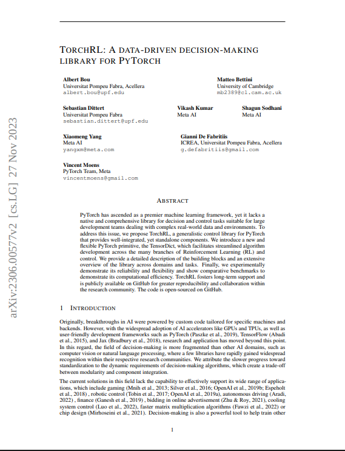
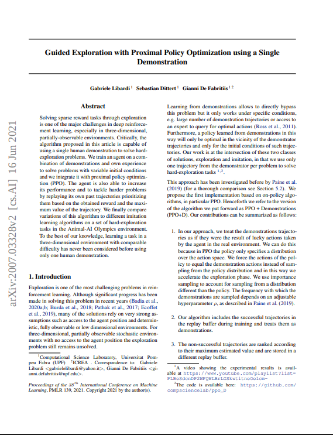
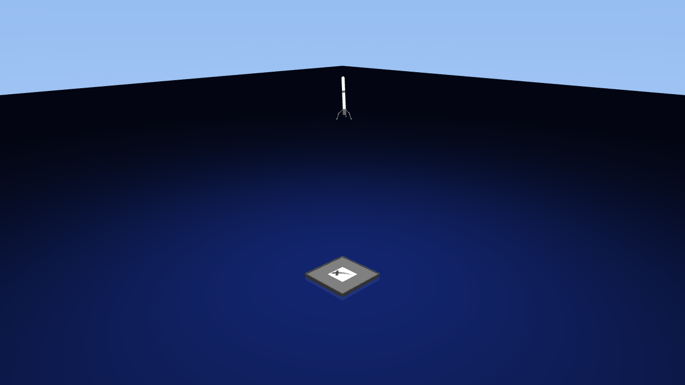

Projects & Highlights




SpaceX Falcon 9 Landing
RL agent trained to land a rocket on a drone ship using MuJoCo physics. GPU-accelerated training with 4096 parallel environments and PPO via TorchRL.
Happy to discuss any of these — feel free to reach out.